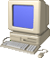

～PCについて～私が所有しているPC一覧です。今後増えるかも
| 一応説明しておきます。ほぼ全部もらいもんです。（スペックアップをしてます） 1台目～ガレリアデスクトップ CPU:intel core i5-4670 3.40GHz GPU:NVIDIA Geforce GTX 760 4GB メモリ:16GB DDR3 マザーボード:ASUS B85M-G 古いのはわかってます。でもつかえる物は使ったほうがいいですし、、、ね 2台目～SONY VAIO CPU:corei7-3632QM 2.20GHz GPU:intel HD Graphics 4000 メモリ:16GB DDR3 こちらも古いです。だって使えますからね、、 3台目はNECのビジネスノートPC、 4台目は小型ノートPC、 5台目はdynabook satellite、 6台目はi7-7500Uが入っているPCです。 こんな感じの6台です。全部古いです。 まあもらったものなので仕方ないでしょう。 OSについてですが、1台目のOSはwindows11とXP、 それ以外は基本windows11です。 4台目だけwindows7 ultimateです。 |
トップ |